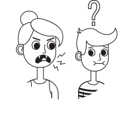

Madre/Gaia
En esta fase las mujeres tienden a cuidar mucho de lo que es suyo. Es un periódo de gestación, protección, cuidado en el cual la mujer empatiza bastante con otros, es por ello que toma una postura de madre. Se vuelven receptivas y cooperativas, predispuestas a conocer y escuchar el otro lado de cualquier situación. .
Es aquí donde el óvulo termina su maduración, y existe un aumento brusco de las hormonas luteinizantes (responsables de la ovulación). Si el óvulo no es fecundado, se lo expulsa en la siguiente menstruación. El apetito se eleva debido al aumento de estrógeno y oxitocina, existiendo mayor probabilidad de quedar embarazada.

Hechicera
En esta fase las mujeres poseen una mayor capacidad creativa que si no es exteriorizada y expresada, el tipo de energía que esta va a emanar es negativa, convirtiendose en llanto, negativada y pensamientos reiterativos. Es importante cuidar de esta fase y expresarse.La mujer adopta una posición reflexiva, sintiendose introspectivas. Existe la necesidad de estar a solas, es por ello que es primordial darles su espacio temporal para que ellas no se frustren.Todo esto se debe a que los niveles de estrógeno y progesterona disminuyen generando el muy conocido “síndrome premenstrual”. Este se presenta en al menos el 75% de las mujeres, provocando ansiedad, depresióm, irritabilidad, etc.